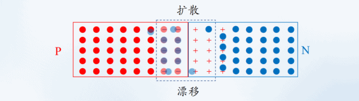
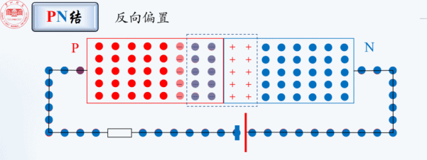

晶体管的工作原理
计算机中对二进制的表达、实现逻辑计算 是通过电路的电流多少来实现的，对电流的控制是技术实现的关键，晶体管的特性使得他适合用于对电路电流的控制。
这里的每个模块展开都是一个很大的知识领域，目的只是想要让思路逻辑连贯，不对每个模块过多展开。
要先搞清电路 才能知道 晶体管是如何控制电路的
1. 电流原理
电流是电子的运动，那什么是电子?
电子是原子中的外层粒子，那什么是原子?
好吧
组成物质的是分子 如纯净的水 是由水分子H2O 组成的。分子又是有原子组成，如水分子是由 H O 两个元素所组成，元素算是原子的实例化吧。(元素的分类其实是按照 原子中的 电子 或 质子 数来区分的，但是元素也存在同位素的情况 比如 氕 氘 氚 他们的电子 或 质子相等，但不同的是 中子的数量..)
原子是由 原子核 与 电子 组成，电子在 原子核 外层运动, 原子核 中又包括 中子 与 质子 ，也就是说 原子 由 电子 中子 质子 三者组成。其中 电子 带负电 ，中子 不带电， 质子 带正电。也就是说原子默认是不带电的，电子与质子之间的相互吸引力 使电势能达到平衡。
分子是多个原子组成的，这个组成也是原子之间通过 电子 与 质子的引力实现的。当通过外力使这种平衡打破，比如在一端加入一个吸引力很大的 质子 这个时候 原子内部的电子就会在这个引力的作用下位移，一旦电子运动起来，电流就形成了。(当然 电子 的运动也要准守能量守恒的，必定的有电子的流入才会有电子的流出的。比如日常使用的电 是通过机械运动使导体切割磁感线，通过磁感线的驱动下让电子运动的) 每个原子是能获取一个电子才会失去一个电子的。
2. 二极管
由上面基础知识可知，如果想要对电流进行干预，是需要在电流的导体之间做一些改变。二极管 三极管 统称为 晶体管，晶体管泛指使用晶体实现的特殊导体，如我们常用的硅晶体 (Si)。
二极管的特点是，正向导电 反向不导电，也就是说 只有一个方向上的电流才会通过，而反方向的话则不能通过，这里的情况是在一定电压范围下的，如果电压足够大(击穿电压) 还是能导电的。
基于二极管的特性 二极管主要用作整流，当然 这个特性也能用与计算机中的电路来表示 0 1，他就像一个开关一样。但是他是由电流方向决定的，要区分出来这些0 1 状态，我们不得不对电流方向进行改变，而这个改变需要通过机械的形式，也就是说 二极管 的开关功能 并不能通过简单的非机械的形式来控制他的开关状态。三极管通过引入一个外部的电流实现了对开关的控制，也是对电流流向的控制。
三级管也是在二极管的基础之上实现的，先看二极管的实现，如何能够做到单项导电这个功能。电子存在导体材料中，如果要去控制电子的流动，则要在导体上做变动。目前的二极管是以 PN结 的形式来实现的, 何为 PN结 ?
二极管的构造由三个部分组成 P极 N极 PN结 , 其中的 PN结 是电子扩散自动产生的，二极管以稳定的 Si 硅元素作为主要导电介质，在硅元素的两端分别参杂一些其他元素形成两个极，其中 P极 掺杂的元素是 硼 ，硼 元素最外层是 3 个电子 与 硅元素的最外层的 4 个电子形成共价键 由于硼的外层电子少一个 则会形成一个 空穴, 这个参杂后的区域则为 P极 且 P级 对电子是有易得性 P = Positive，但是这里是没有多余电子的，因为每个元素的外层电子与内部质子相等。N极 掺杂的杂质是 磷，磷 的最外层电子是 5个，与 硅的 4 个 外层电子形成共价键后 还有一个 电子，这个电子存在易失性 N = Negative 同样 N极 也是不带电的。
由于 P级 对电子有易得性 N极 对电子有易失性，将这两个区域放在一起的时候，最接近的两个地方的电子就会有一部分从 N极 偏移到 P极 ，这样 P极 N极 的中间部分就形成了一个新的区域 叫 PN结
PN结的电子分布情况
由于 P极 N极 相邻的位置处，电子在引力的作用下会发生位置偏移，N极 的电子进入P极区域，这个过程仅仅在相邻区域的一定宽度内形成 电子的扩散。扩散过程如下图：
最终形成的是下图这样的一个布局，这样在 PN结 区域形成了一个跟 P-N 区域相反的电场，这样就有办法处理电流的流向了。
在电场力的作用下，电子还会流向 N极 方向，然后又在 P-N 电场力的作用下 流向 P极，所以 其实 PN结 中的电子是运动的，如下图一样，不过实际的电子移动并没有途中那样规律

PN 结构是如何控制单向电流
当对二极管的 P极 加正电， 在外力的作用下 电子 会向 P极 流动，PN结 区域形成的电场力就会被削弱(电子减少，平衡被打破)，最后大量的电子会定向运动 形成电流 导致通电。
PN结 电场 削弱
大量电子流向P极
当反转外部电流，将电压加到 N极 N极 电子会流出 外部电压又把电流输入到 P极 进而导致PN结的电场力争强，最终只会有很少量的电子流向 N极 电路中只会形成微弱的电流

终于 解释了 二极管的工作原理
本来以为将二极管的电子运动原理搞清楚，就能轻松推算出来三极管中的电子运动规律，进而解释三极管实现开关以及电路放大的原理。但是是我太年轻了，上面二极管的电子运动过程并不是真实的，而是为了方便理解 人为脑补的运动过程。
目前的技术 至今无法观察到电子的运动轨迹，然后我又花了几天的时间，搞明白了电子的发现过程。汤姆逊发现电子的过程是在 阴极射线管中观察到 在二极管中增加电压时 二极管中会出现光束，并通过一系列实现证实，这个光束不是光子 ，因为光子不会受磁场的影响，而这里的光束会受磁场影响，并通过风车实现证实这个组成光束的粒子是有质量的，然后这些粒子还受到电场的影响。
所以，这里并不能通过电子的运动分析 二极管 三极管 的原理
当然 这些原理都是来自于 阴极射线管 的原理，这里对电子运动的大概推测也是可信的，他可以由力学知识支持。
3. 三极管
三极管又有多种分类，其中在CPU中使用多的是 场效应管，这里只看这个。刚才提到的 二极管 的功能是能够通过 N->P 的电流 阻止 P->N 的电流，将二极管作为CPU逻辑计算中的开关 需要不断变换电流方向，这相对麻烦。三极管相对方便，他在二极管的基础上提供了一个外部电压，用外部电压改变PN结形成的电场力 从而达到 利用这跟外部线来决定 晶体管所在电路中的通 断。
其实由于我们并不能对电子的运动规律进行详细的研究，也就很难通过电子的运动 去解释三极管的工作原理。这里对三极管的工作形式应该通过电场的角度去分析
对于三极管的工作原理我又从新梳理了一遍 请参考这里
深入分析电子以及三极管的工作形式